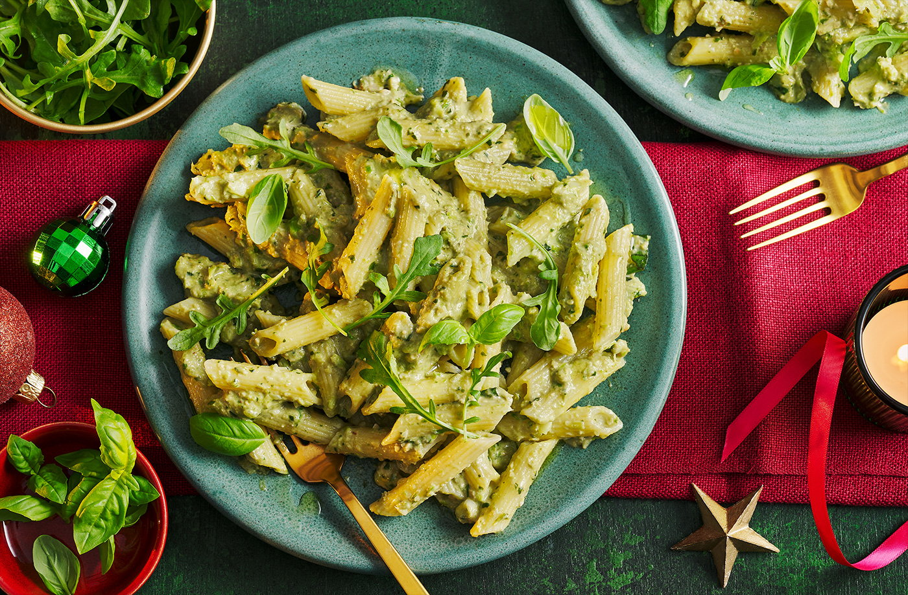

Ingredients
- 80-200g leftover cooked sprouts
- 0g leftover nuts, roasted are best
- 5g leftover cheeses (you can use edible rinds, Parmesan, Stilton), cut into chunks
- 5g Grana Padano, cut into chunks
- 0g fresh basil, leaves picked, plus a few extra leaves to serve
- 100ml olive oil, plus extra to serve
- 100g gluten-free pasta, any shape will do but we used penne
Instructions
- In a food processor, blitz the leftover sprouts, nuts, cheeses and basil to form a rough paste. Pour in the olive oil whilst the machine is running to create a creamy pesto.
- Cook the pasta according to pack instructions.
- Drain and toss in the pesto. Add a splash of boiling water if the pesto needs to loosen to coat the pasta.
- Serve topped with a few extra basil leaves, a drizzle of extra olive oil and the rocket.

Time Taken
| Preperation Time |
Cooking Time |
| 10 |
20 |